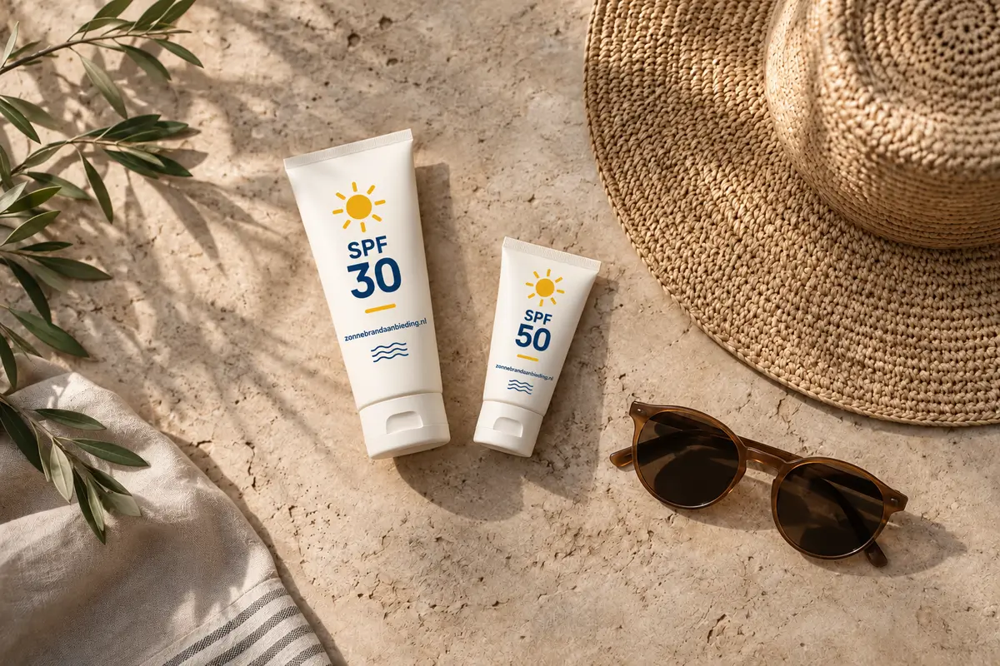

Altruist - Crème/lotionBekijk hier
Altruist Zonnebrandcrème SPF30 1000 ml
€ 25,44per stuk
€ 2,54 per 100 ml
2 × 1000 ml voor € 50,87
Beide zijn hoge beschermingsfactoren. De beste keuze is de factor die je royaal, gelijkmatig en vaak genoeg gebruikt.

SPF staat voor Sun Protection Factor en beschrijft de bescherming tegen UVB-straling, de straling die vooral zonnebrand veroorzaakt. UVA-bescherming staat daar los van. Kies daarom een product met het UVA-logo: de letters UVA in een cirkel.
De bescherming op de verpakking wordt getest met een ruime hoeveelheid product. Wie te dun of ongelijk smeert, haalt die bescherming niet. Opnieuw smeren is bovendien nodig doordat product van de huid verdwijnt door zwemmen, afdrogen, zweten en aanraken.
De factor is maar één onderdeel van je keuze. Kijk ook naar de toepassing, inhoud en een vorm die je gemakkelijk opnieuw aanbrengt.
€ 2,54 per 100 ml
2 × 1000 ml voor € 50,87

€ 3,17 per 100 ml
6 × 200 ml voor € 37,99

€ 3,24 per 100 ml
6 × 180 ml voor € 34,99

€ 5,61 per 100 ml

€ 5,98 per 100 ml

€ 6,40 per 100 ml
2 × 150 ml voor € 19,21
Laatst gecontroleerd: 8 september 2026 · Bron: KWF – Alles over zonnebrandcrème.